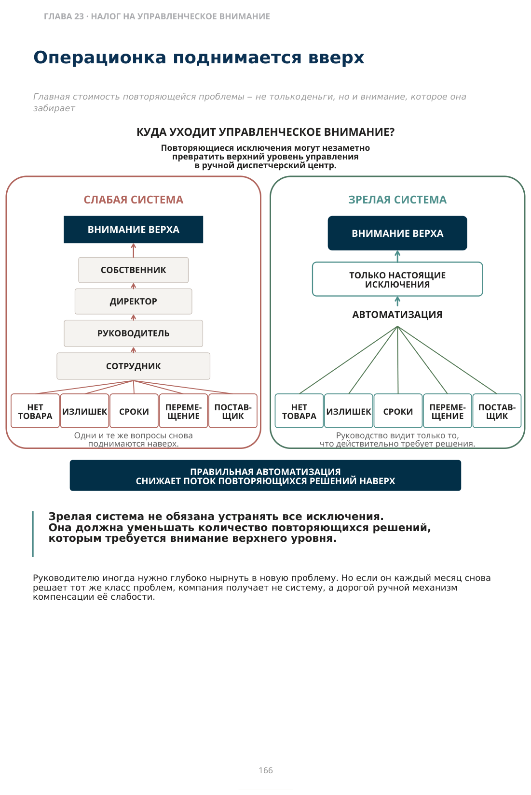
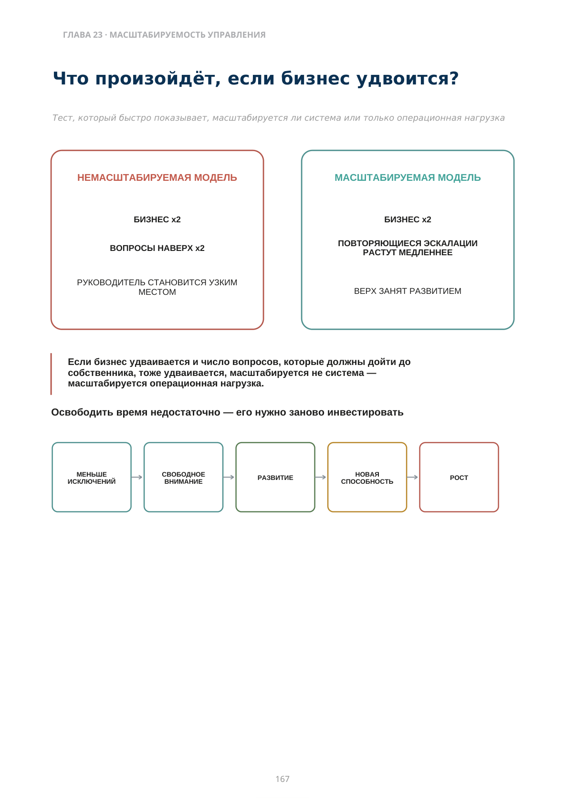
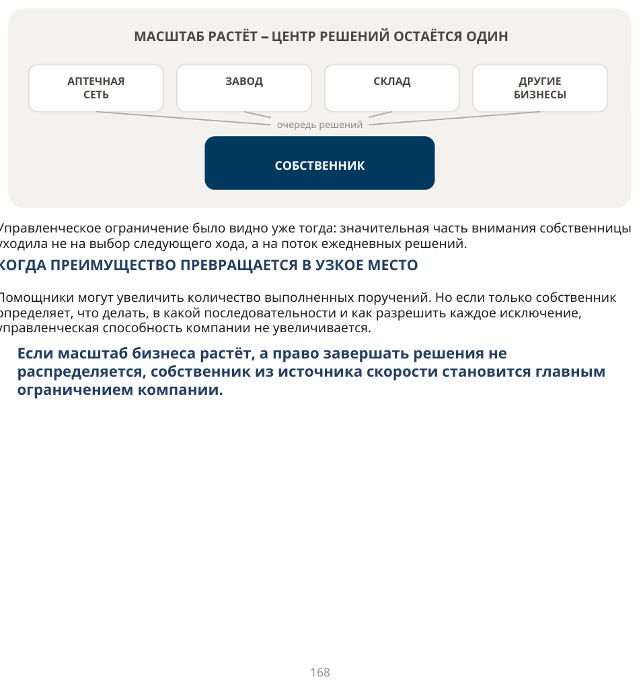
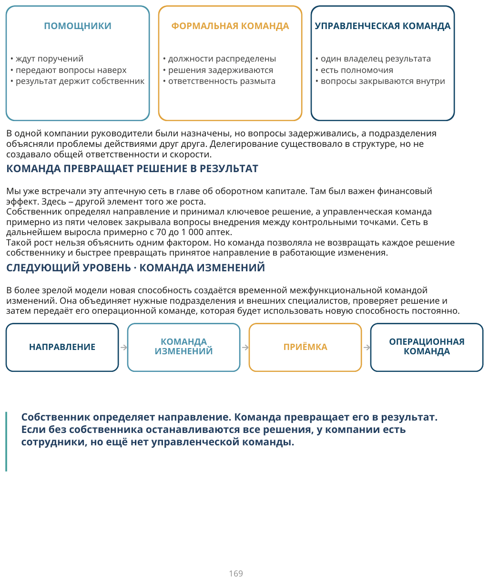
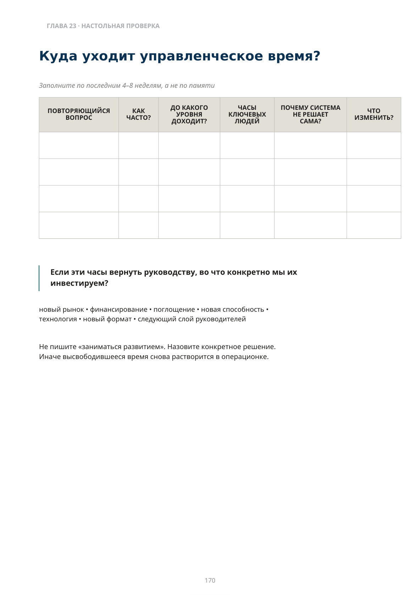

Последнее узкое место
Управленческое внимание как ограничение роста
Что является самым дефицитным ресурсом растущей компании? Деньги? Люди? Технологии?
Для многих компаний ответ оказывается менее очевидным: время ключевых руководителей.
Деньги можно привлечь. С поставщиком можно договориться о более длинной отсрочке. Можно найти партнёра, нанять специалиста, взять кредит, изменить структуру капитала. Но часы людей, которые понимают бизнес, способны принимать ключевые решения и двигать компанию вперёд, нельзя увеличить с той же скоростью.
Компания может исчерпать внимание руководителей раньше, чем исчерпает деньги.
Это ограничение редко выглядит как стратегическая проблема. Обычно оно выглядит как обычная работа: звонки, совещания, срочные исключения и ежедневные решения, которые снова и снова поднимаются вверх.
Автоматизировать процесс недостаточно
Нужно убрать повторяющиеся управленческие решения
Сам факт автоматизации ещё ничего не гарантирует. Можно автоматизировать слабый процесс — и проблемы всё равно будут
подниматься наверх. Можно быстрее
сформировать плохой заказ, автоматически создать избыток или построить систему из
Несколько клиентов сказали мне, что
сотен предупреждений, каждое из которых
ценность проекта заключалась
всё равно разбирает руководитель.
не только в высоком уровне наличия, меньшем запасе и автоматическом
Правильная автоматизация не просто
пополнении.
выполняет операцию вместо человека. Она
Ключевые люди компании перестали
формализует повторяющиеся решения,
постоянно обсуждать одни и те же
решает стандартные ситуации сама, отличает
проблемы с товаром: дефектуру,
норму от настоящего исключения и
излишки, сроки годности,
поднимает наверх только то, где
перемещения и складские
действительно нужно решение руководителя.
исключения.
Система высвободила не
После автоматизации
только капитал из
уменьшается ли количество
запаса. Она высвободила
повторяющихся решений,
время людей, которые
которые требуют внимания
должны создавать
руководителей?
следующий этап
Если нет, автоматизирована операция — но не
компании.
управленческая проблема.
Один из собственников, отвечавший за развитие бизнеса, назвал высвободившееся время ключевых людей одним из крупнейших эффектов проекта.
Операционка поднимается вверх
Главная стоимость повторяющейся проблемы — не только деньги, но и внимание, которое она забирает
Повторяющиеся исключения могут незаметно превратить верхний уровень управления в ручной диспетчерский центр.
Зрелая система не обязана устранять все исключения. Она должна уменьшать количество повторяющихся решений, которым требуется внимание верхнего уровня.
Руководителю иногда нужно глубоко нырнуть в новую проблему. Но если он каждый месяц снова решает тот же класс проблем, компания получает не систему, а дорогой ручной механизм компенсации её слабости.

Описание схемы
FIG_085: Операционка поднимается вверх: слабая и зрелая системы
Слабая система поднимает текущие вопросы вверх к собственнику и руководителям; зрелая система оставляет наверху только действительно исключительные решения, а типовые задачи обрабатываются автоматизацией. Вывод: правильная автоматизация снижает поток повторяющихся решений наверх.
Что произойдёт, если бизнес удвоится?
Тест, который быстро показывает, масштабируется ли система или только операционная нагрузка

Описание схемы
FIG_086: Что произойдёт, если бизнес удвоится?
Немасштабируемая модель держит ключевые функции на собственнике; масштабируемая модель переводит повторяемые решения в процессы, роли и систему. Освобождённое управленческое время можно инвестировать в рост.
КОГДА СИЛА СОБСТВЕННИКА СТАНОВИТСЯ ОГРАНИЧЕНИЕМ
Освободить управленческое внимание недостаточно. Следующий вопрос — может ли компания принимать решения без того, чтобы всё снова сходилось к одному человеку. В небольшой компании сильный собственник часто является преимуществом: он видит всю картину и быстро принимает решения. Но масштаб бизнеса растёт быстрее, чем пропускная способность одного человека.
В одной крупной фармацевтической группе собственница управляла аптечной сетью более чем из ста точек, производством и несколькими другими бизнесами. Во время нашей встречи она одновременно утверждала заказы и отвечала на операционные вопросы. Презентацию предложила продолжать: «Я всё слышу». Вокруг были помощники, но решения всё равно проходили через неё. Масштаб компании вырос, а система управления осталась построенной вокруг пропускной способности одного человека.
Управленческое ограничение было видно уже тогда: значительная часть внимания собственницы уходила не на выбор следующего хода, а на поток ежедневных решений.
Помощники могут увеличить количество выполненных поручений. Но если только собственник определяет, что делать, в какой последовательности и как разрешить каждое исключение, управленческая способность компании не увеличивается.
Если масштаб бизнеса растёт, а право завершать решения не распределяется, собственник из источника скорости становится главным ограничением компании.

Описание схемы
FIG_087: Масштаб растёт — центр решений остаётся один
При росте масштаба вокруг одного собственника появляются аптечная сеть, завод, склад и другие бизнесы, но центр решений остаётся один. Риск: масштаб растёт быстрее управленческой пропускной способности.
ЛЮДИ В СТРУКТУРЕ ЕЩЁ НЕ ОЗНАЧАЮТ КОМАНДУ
Команда определяется не количеством должностей. Главный вопрос — способны ли люди принять задачу, договориться между собой и довести изменение до результата без постоянного ручного управления собственника.
В одной компании руководители были назначены, но вопросы задерживались, а подразделения объясняли проблемы действиями друг друга. Делегирование существовало в структуре, но не создавало общей ответственности и скорости.
Мы уже встречали эту аптечную сеть в главе об оборотном капитале. Там был важен финансовый эффект. Здесь — другой элемент того же роста. Собственник определял направление и принимал ключевое решение, а управленческая команда примерно из пяти человек закрывала вопросы внедрения между контрольными точками. Сеть в дальнейшем выросла примерно с 70 до 1 000 аптек. Такой рост нельзя объяснить одним фактором. Но команда позволяла не возвращать каждое решение собственнику и быстрее превращать принятое направление в работающие изменения.
В более зрелой модели новая способность создаётся временной межфункциональной командой изменений. Она объединяет нужные подразделения и внешних специалистов, проверяет решение и затем передаёт его операционной команде, которая будет использовать новую способность постоянно.
- НАПРАВЛЕНИЕ
- КОМАНДА ИЗМЕНЕНИЙ
- ПРИЁМКА
- ОПЕРАЦИОННАЯ КОМАНДА
Собственник определяет направление. Команда превращает его в результат. Если без собственника останавливаются все решения, у компании есть сотрудники, но ещё нет управленческой команды.

Описание схемы
FIG_088: Люди в структуре ещё не означают управленческую команду
Три уровня команды: помощники выполняют поручения и передают вопросы наверх; формальная команда имеет распределённые должности, но решения остаются централизованными; управленческая команда владеет результатом и способна принимать решения в своей зоне.
Куда уходит управленческое время?
Заполните по последним 4–8 неделям, а не по памяти
Если эти часы вернуть руководству, во что конкретно мы их инвестируем?
новый рынок • финансирование • поглощение • новая способность • технология • новый формат • следующий слой руководителей
Не пишите «заниматься развитием». Назовите конкретное решение. Иначе высвободившееся время снова растворится в операционке.

Описание схемы
FIG_089: Куда уходит управленческое время?
Рабочая таблица для анализа управленческого времени: повторяющийся вопрос, кто его задаёт, до какого уровня он доходит, частота, почему система не решает его сама и что нужно изменить.